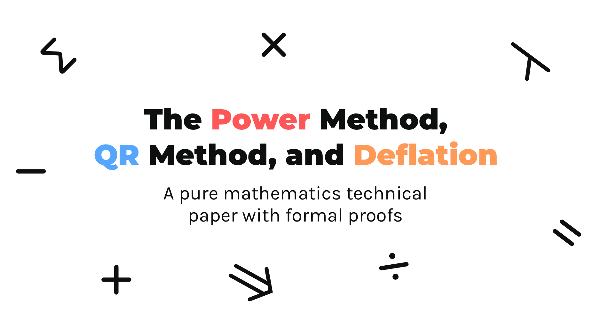

The Power Method, QR Method, and Deflation
A detailed exploration of the Power Method, QR decomposition, and deflation in Julia, complete with step-by-step proofs and implementations for computing eigenvalues, eigenvectors, and singular values.